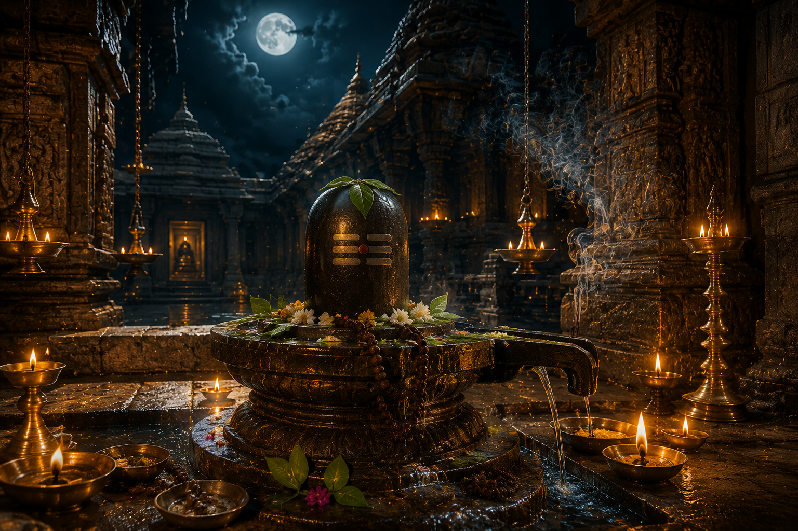

మహా శివరాత్రి
భారతీయ మరియు తెలుగు సంప్రదాయ పర్వదినం

౧. పరిచయం
మహా శివరాత్రి హిందూ ధర్మంలో అత్యంత పవిత్రమైన శైవ పర్వదినాలలో ఒకటి. ప్రతి సంవత్సరం మాఘ బహుళ చతుర్దశి రోజున ఈ మహోత్సవాన్ని అత్యంత భక్తిశ్రద్ధలతో నిర్వహిస్తారు. ఈ రోజు పరమశివునికి అత్యంత ప్రీతికరమైనదిగా భావించబడుతుంది. దేశవ్యాప్తంగా ఉన్న శివాలయాలు భక్తులతో కిక్కిరిసి, రాత్రంతా శివనామస్మరణ, అభిషేకాలు, భజనలు, జాగరణలు నిర్వహించబడతాయి.
౨. పండుగ ప్రాముఖ్యత
మహా శివరాత్రి ఉపవాసం, జాగరణ, శివారాధన మరియు ఆత్మశుద్ధికి ప్రతీకగా నిలుస్తుంది. ఈ రోజున భక్తిశ్రద్ధలతో పరమశివుని ఆరాధించిన వారికి పాప విముక్తి, మనశ్శాంతి, ఆరోగ్యం, ఐశ్వర్యం మరియు మోక్షప్రాప్తి కలుగుతాయని శాస్త్రాలు పేర్కొంటాయి.
ఈ రాత్రి అజ్ఞానాంధకారాన్ని తొలగించి జ్ఞానజ్యోతిని వెలిగించే పవిత్ర రాత్రిగా భావించబడుతుంది.
ఈ రాత్రి అజ్ఞానాంధకారాన్ని తొలగించి జ్ఞానజ్యోతిని వెలిగించే పవిత్ర రాత్రిగా భావించబడుతుంది.
౩. మహా శివరాత్రి ఆవిర్భావం – పురాణ నేపథ్యం
మహా శివరాత్రికి సంబంధించిన అనేక పురాణ కథలు ఉన్నాయి.
ఒక పురాణ కథనం ప్రకారం, ఒకసారి బ్రహ్మదేవుడు మరియు శ్రీమహావిష్ణువు తమలో ఎవరు గొప్పవారో తెలుసుకోవడానికి వాదించుకున్నారు. అప్పుడు అనంతమైన జ్యోతిర్లింగ రూపంలో పరమశివుడు ప్రత్యక్షమై, ఆ జ్యోతికి ఆది అంతాలు కనుగొనమని వారిని ఆదేశించాడు.
శ్రీమహావిష్ణువు వరాహావతారం ధరించి క్రిందికి, బ్రహ్మదేవుడు హంస రూపంలో పైకి ప్రయాణించినప్పటికీ ఆ జ్యోతికి ఆది అంతాలు కనిపించలేదు. దీంతో పరమశివుని అనంతత్వాన్ని వారు అంగీకరించారు. ఆ దివ్య జ్యోతి ప్రత్యక్షమైన రాత్రినే మహా శివరాత్రిగా భావిస్తారు.
మరొక విశ్వాసం ప్రకారం, ఈ రోజునే పరమశివుడు పార్వతీదేవిని వివాహం చేసుకున్నాడని కూడా చెబుతారు.
ఒక పురాణ కథనం ప్రకారం, ఒకసారి బ్రహ్మదేవుడు మరియు శ్రీమహావిష్ణువు తమలో ఎవరు గొప్పవారో తెలుసుకోవడానికి వాదించుకున్నారు. అప్పుడు అనంతమైన జ్యోతిర్లింగ రూపంలో పరమశివుడు ప్రత్యక్షమై, ఆ జ్యోతికి ఆది అంతాలు కనుగొనమని వారిని ఆదేశించాడు.
శ్రీమహావిష్ణువు వరాహావతారం ధరించి క్రిందికి, బ్రహ్మదేవుడు హంస రూపంలో పైకి ప్రయాణించినప్పటికీ ఆ జ్యోతికి ఆది అంతాలు కనిపించలేదు. దీంతో పరమశివుని అనంతత్వాన్ని వారు అంగీకరించారు. ఆ దివ్య జ్యోతి ప్రత్యక్షమైన రాత్రినే మహా శివరాత్రిగా భావిస్తారు.
మరొక విశ్వాసం ప్రకారం, ఈ రోజునే పరమశివుడు పార్వతీదేవిని వివాహం చేసుకున్నాడని కూడా చెబుతారు.
౪. చరిత్ర
మహా శివరాత్రి ఉత్సవానికి వేల సంవత్సరాల చరిత్ర ఉంది. వేదాలు, పురాణాలు మరియు ఆగమ శాస్త్రాలలో ఈ పర్వదినం గురించి విస్తృతంగా ప్రస్తావించబడింది.
భారతదేశమంతటా శైవ సంప్రదాయాన్ని అనుసరించే భక్తులు ఈ పర్వదినాన్ని అత్యంత వైభవంగా జరుపుకుంటారు. ద్వాదశ జ్యోతిర్లింగాలు, పంచారామ క్షేత్రాలు మరియు ప్రముఖ శివాలయాలలో లక్షలాది మంది భక్తులు పాల్గొంటారు.
భారతదేశమంతటా శైవ సంప్రదాయాన్ని అనుసరించే భక్తులు ఈ పర్వదినాన్ని అత్యంత వైభవంగా జరుపుకుంటారు. ద్వాదశ జ్యోతిర్లింగాలు, పంచారామ క్షేత్రాలు మరియు ప్రముఖ శివాలయాలలో లక్షలాది మంది భక్తులు పాల్గొంటారు.
౫. మహా శివరాత్రి ఎలా జరుపుకుంటారు
మహా శివరాత్రి రోజున భక్తులు తెల్లవారుజామునే పవిత్ర స్నానం చేసి ఉపవాసాన్ని ఆచరిస్తారు.
పరమశివునికి పాలు, పెరుగు, తేనె, నెయ్యి, చెరకు రసం, కొబ్బరి నీరు, గంగాజలం వంటి పవిత్ర ద్రవ్యాలతో అభిషేకం నిర్వహిస్తారు.
బిల్వదళాలను సమర్పించి, "ఓం నమః శివాయ" మంత్రాన్ని జపిస్తూ రాత్రంతా జాగరణ చేస్తారు. నాలుగు యామాలలో ప్రత్యేక పూజలు నిర్వహించడం శైవ సంప్రదాయంలో విశిష్టమైన ఆచారం.
పరమశివునికి పాలు, పెరుగు, తేనె, నెయ్యి, చెరకు రసం, కొబ్బరి నీరు, గంగాజలం వంటి పవిత్ర ద్రవ్యాలతో అభిషేకం నిర్వహిస్తారు.
బిల్వదళాలను సమర్పించి, "ఓం నమః శివాయ" మంత్రాన్ని జపిస్తూ రాత్రంతా జాగరణ చేస్తారు. నాలుగు యామాలలో ప్రత్యేక పూజలు నిర్వహించడం శైవ సంప్రదాయంలో విశిష్టమైన ఆచారం.
౬. మహా శివరాత్రి రోజున నిర్వహించే ప్రధాన ఆచారాలు
ఉపవాస దీక్ష
పవిత్ర స్నానం
శివలింగాభిషేకం
బిల్వదళ సమర్పణ
రుద్రాభిషేకం
పంచాక్షరి మంత్ర జపం
శివ పురాణ పారాయణం
రాత్రి జాగరణ
దానధర్మాలు
పవిత్ర స్నానం
శివలింగాభిషేకం
బిల్వదళ సమర్పణ
రుద్రాభిషేకం
పంచాక్షరి మంత్ర జపం
శివ పురాణ పారాయణం
రాత్రి జాగరణ
దానధర్మాలు
౭. ప్రధానంగా ఎక్కడ జరుపుకుంటారు
శ్రీశైలం శ్రీ మల్లికార్జున స్వామి దేవస్థానం
శ్రీకాళహస్తి శ్రీ కాళహస్తీశ్వర స్వామి దేవాలయం
కాశీ విశ్వనాథ క్షేత్రం
సోమనాథ జ్యోతిర్లింగం
కేదారనాథ్
మహాకాళేశ్వర క్షేత్రం
రామేశ్వరం
భీమేశ్వర క్షేత్రాలు
భారతదేశంలోని అన్ని శివాలయాలు
శ్రీకాళహస్తి శ్రీ కాళహస్తీశ్వర స్వామి దేవాలయం
కాశీ విశ్వనాథ క్షేత్రం
సోమనాథ జ్యోతిర్లింగం
కేదారనాథ్
మహాకాళేశ్వర క్షేత్రం
రామేశ్వరం
భీమేశ్వర క్షేత్రాలు
భారతదేశంలోని అన్ని శివాలయాలు
౮. మహా శివరాత్రి ఆధ్యాత్మిక సందేశం
పరమశివుడు త్యాగానికి, కరుణకు, సమత్వానికి ప్రతీక.
మహా శివరాత్రి మనలోని అహంకారం, క్రోధం, మోహం, లోభం వంటి దుర్గుణాలను విడిచిపెట్టి, సత్యం, ధర్మం, దయ, వినయం వంటి సద్గుణాలను అలవరచుకోవాలని బోధిస్తుంది.
రాత్రంతా జాగరణ చేయడం అంటే కేవలం నిద్రపోకుండా ఉండడం కాదు; అజ్ఞానం నుండి జ్ఞానానికి మేల్కొనడమే అసలైన సందేశం
మహా శివరాత్రి మనలోని అహంకారం, క్రోధం, మోహం, లోభం వంటి దుర్గుణాలను విడిచిపెట్టి, సత్యం, ధర్మం, దయ, వినయం వంటి సద్గుణాలను అలవరచుకోవాలని బోధిస్తుంది.
రాత్రంతా జాగరణ చేయడం అంటే కేవలం నిద్రపోకుండా ఉండడం కాదు; అజ్ఞానం నుండి జ్ఞానానికి మేల్కొనడమే అసలైన సందేశం
౯. ఆసక్తికర విషయాలు
మహా శివరాత్రి సంవత్సరంలో అత్యంత ముఖ్యమైన శైవ పర్వదినంగా భావించబడుతుంది.
ఈ రోజున నాలుగు యామాలలో ప్రత్యేక పూజలు నిర్వహిస్తారు.
బిల్వదళం పరమశివునికి అత్యంత ప్రీతికరమైన పత్రంగా భావించబడుతుంది.
"ఓం నమః శివాయ" పంచాక్షరి మంత్రాన్ని ఈ రోజున జపించడం విశేష ఫలితాన్ని ఇస్తుందని శాస్త్రాలు పేర్కొంటాయి.
ద్వాదశ జ్యోతిర్లింగాలలో ఈ పర్వదినం అత్యంత వైభవంగా నిర్వహించబడుతుంది.
మహా శివరాత్రి రోజున ఉపవాసం, జాగరణ, అభిషేకం చేయడం విశేష పుణ్యప్రదంగా భావించబడుతుంది.
ఈ రోజున నాలుగు యామాలలో ప్రత్యేక పూజలు నిర్వహిస్తారు.
బిల్వదళం పరమశివునికి అత్యంత ప్రీతికరమైన పత్రంగా భావించబడుతుంది.
"ఓం నమః శివాయ" పంచాక్షరి మంత్రాన్ని ఈ రోజున జపించడం విశేష ఫలితాన్ని ఇస్తుందని శాస్త్రాలు పేర్కొంటాయి.
ద్వాదశ జ్యోతిర్లింగాలలో ఈ పర్వదినం అత్యంత వైభవంగా నిర్వహించబడుతుంది.
మహా శివరాత్రి రోజున ఉపవాసం, జాగరణ, అభిషేకం చేయడం విశేష పుణ్యప్రదంగా భావించబడుతుంది.
౧౦. మహా శివరాత్రి రోజున చేయవలసిన ముఖ్యమైనవి
పవిత్ర స్నానం చేయాలి.
ఉపవాసం ఆచరించాలి.
శివలింగానికి అభిషేకం చేయాలి.
బిల్వదళాలు సమర్పించాలి.
పంచాక్షరి మంత్రాన్ని జపించాలి.
శివ పురాణం లేదా శివతత్వాన్ని చదవాలి.
రాత్రి జాగరణ చేయాలి.
దానధర్మాలు చేయాలి.
శివాలయాన్ని దర్శించాలి.
ఉపవాసం ఆచరించాలి.
శివలింగానికి అభిషేకం చేయాలి.
బిల్వదళాలు సమర్పించాలి.
పంచాక్షరి మంత్రాన్ని జపించాలి.
శివ పురాణం లేదా శివతత్వాన్ని చదవాలి.
రాత్రి జాగరణ చేయాలి.
దానధర్మాలు చేయాలి.
శివాలయాన్ని దర్శించాలి.
౧౧. ఆధారాలు
గ్రంథ ఆధారాలు
శివ పురాణం
లింగ పురాణం
స్కాంద పురాణం
కూర్మ పురాణం
వాయు పురాణం
ఇతర ఆధారాలు
శైవ ఆగమాలు
ప్రముఖ శివాలయాల ప్రచురణలు
భారతీయ ధార్మిక సంప్రదాయ గ్రంథాలు
శివ పురాణం
లింగ పురాణం
స్కాంద పురాణం
కూర్మ పురాణం
వాయు పురాణం
ఇతర ఆధారాలు
శైవ ఆగమాలు
ప్రముఖ శివాలయాల ప్రచురణలు
భారతీయ ధార్మిక సంప్రదాయ గ్రంథాలు
౧౨. ముగింపు
మహా శివరాత్రి కేవలం ఒక పర్వదినం మాత్రమే కాదు; అది ఆత్మశుద్ధికి, భక్తికి, తపస్సుకు మరియు జ్ఞానానికి ప్రతీక. పరమశివుని అనుగ్రహాన్ని పొందేందుకు భక్తులు ఉపవాసం, జాగరణ మరియు శివారాధనతో ఈ పవిత్ర రాత్రిని గడుపుతారు.
మహా శివరాత్రి మనలోని అజ్ఞానాన్ని తొలగించి, జ్ఞానజ్యోతిని వెలిగిస్తూ ధర్మమార్గంలో నడవాలని బోధించే మహోన్నత పర్వదినం.
"ఓం నమః శివాయ" అనే పంచాక్షరి మంత్రం ప్రతి హృదయంలో మారుమ్రోగి, శివానుగ్రహం ప్రతి జీవికి కలగాలని కోరుకుందాం.
మహా శివరాత్రి మనలోని అజ్ఞానాన్ని తొలగించి, జ్ఞానజ్యోతిని వెలిగిస్తూ ధర్మమార్గంలో నడవాలని బోధించే మహోన్నత పర్వదినం.
"ఓం నమః శివాయ" అనే పంచాక్షరి మంత్రం ప్రతి హృదయంలో మారుమ్రోగి, శివానుగ్రహం ప్రతి జీవికి కలగాలని కోరుకుందాం.
✦ సర్వే జనాః సుఖినో భవంతు ✦